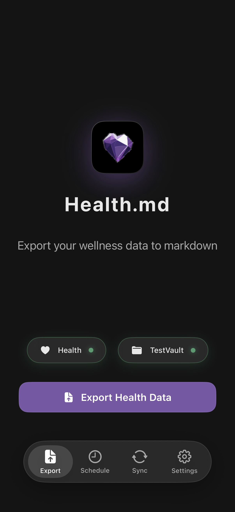
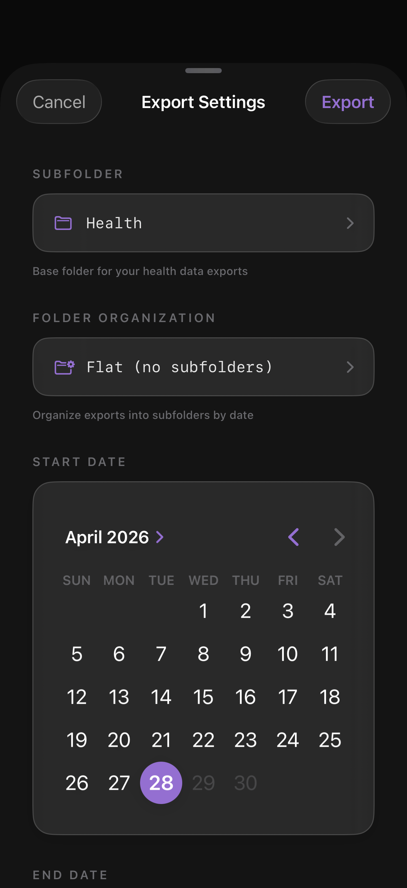

Core Feature
Export
The Export tab is the main canvas. It shows whether HealthKit and your vault are connected, exposes a single Export button, and gives you a date-range modal for one-off exports.

The two badges
The Export Health Data button is disabled until both badges are green. This prevents the most common failure mode: trying to export with no destination.
The export modal

Tapping Export Health Data opens this modal. From here you control:
What "exporting" actually does
- For each day in the range, query HealthKit for every metric you've enabled.
- Apply your chosen format (Markdown, Bases, JSON, or CSV) and template.
- Write one file per day into
{vault}/{subfolder}/. - If Individual Tracking is on, also write one file per timestamped entry into the entries folder.
- If Daily Note Injection is on, also merge metrics into your daily notes' frontmatter.
Tab bar
The four tabs at the bottom of the screen — Export, Schedule, Sync, Settings — cover the entire app surface area. Everything else lives one or two layers deep inside Settings.
Free trial limit.
Free users get 3 full exports. After that, tapping Export opens the paywall. See the Paywall page for what unlocks change.